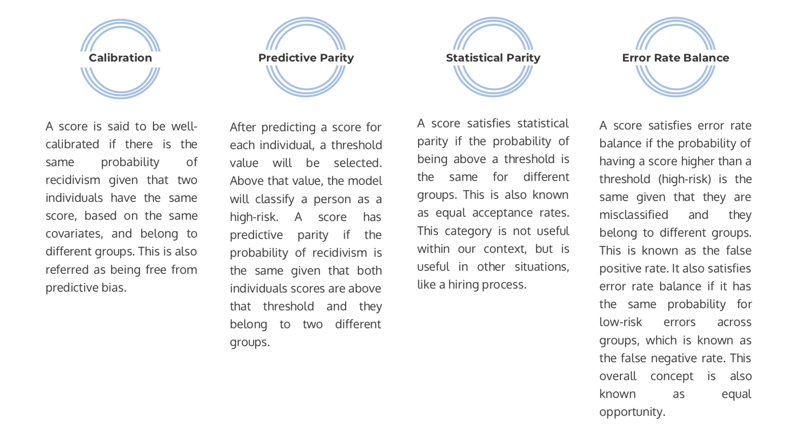

An Agent-Based Modeling Approach to Addressing the Opioid Crisis: Where are local “hot spots” for opioid-related deaths? What interventions may help decrease the number of these deaths?
Contributors to this project include Viggy Kumaresan, Azucena Morales, Yifei Wang, and Sicong Zhao.
Over the last few years, data-driven decision making has grown rapidly across all domains. It is hard to imagine a domain more high-stakes than the criminal justice system, where a decisions can have lifelong consequences for individuals. Unfortunately, research has shown that these algorithms are biased in their decision-making, specifically on the basis of race. Below we identify three issues associated with reducing bias in criminal justice algorithms; 1) identifying bias, 2) quantifying bias, 3) and remedying bias. Our solutions for these problems call for transparency, establishment of clear criterion, and constant evaluation. With this feedback loop, we hope to set a framework for public officials to follow when proactively thinking about bias in any criminal justice algorithm.

Consider two individuals; both charged with petty crimes. The first is Brisha Borden, an 18-year-old girl with no criminal record who attempted to steal a 6-year old’s bike and razor scooter on her way to pick up her god-sister from school. The second is Vernon Prater, a 41-year-old man previously convicted of multiple attempted and completed arm robberies who has spent five years in jail for his crimes. He attempted to shoplift $86.35 worth of tools from Home Depot. Which of these individuals would you say is more likely to commit a future crime? According to COMPAS, an automatic risk assessment tool used in judicial systems across the country, Borden, who is black, is a high risk, while Prater, who is white, is a low risk [1].
Advocates of machine learning argue that algorithms, unlike humans, have the ability to base decisions entirely on logic and therefore have the power to eliminate human biases from decision making entirely. However, studies have shown that this is far from reality [2, 3, 4]. Without careful precautions, algorithmic decision making has been shown to result in inconsistent effects across classes of people. "If data miners are not careful, the process can result in disproportionately adverse outcomes concentrated within historically disadvantaged groups in ways that look a lot like discrimination" [4]. Either with or without intention, a steadfast reliance on data for decision making has the potential to perpetuate human bias.
Algorithmic bias becomes even more problematic when applied in life-altering circumstances, such as in the criminal justice system. With current spending in the US reaching $13.7 billion on jailing and approximately $443,000 on pre-trial expenses each day, more and more justice systems are turning to algorithms to aid in decision-making, especially as the pre-trial burden in the United States continues to increase [5]. Specifically, many courts have integrated risk assessment algorithms to help determine sentencing and bail for individuals [1, 6, 7]. Unfortunately, there is little standard, regulation, or rigor applied to assessing the accuracy of these methods. Thus, recommendations from algorithms already instituted in justice systems are often heavily skewed to target African-Americans [1, 6]
COMPAS, the Correctional Offender Management Profiling for Alternative Sanctions, is one such algorithmic risk assessment. Developed by a for-profit company called Equivant (formerly Northpointe), COMPAS was designed to predict a defendant’s risk of committing future crimes. The algorithm takes in answers to a 137-item questionnaire and produces a risk-score scaled from one to ten, one being the least risky and ten being the most risky. Importantly, nowhere in the questionnaire, is there mention of race. Despite explicit exclusion of race as an input into prediction, outcomes do, in fact, differ by race. Specifically, prediction error, assigning a high risk- score to a defendant that did not ultimately reoffend and assigning low a risk-score to a defendant that ultimately did reoffend are unfavorably higher for black defendants [1, 6, 7].
For the most part, these algorithms are created by for-profit companies that use proprietary knowledge, and the companies are usually unwilling to share their knowledge in order to preserve their bottom line. Consequently, these algorithms are extremely difficult to judge or assess, and harm is only identifiable after the fact.
In the case of the COMPAS algorithm, we know an individual's risk score is based on their criminal history, age, gender as well as other information, such as whether their mother was ever arrested or whether they have trouble paying bills [8]. ProPublica, a non-profit think tank, found that these factors were causing the algorithm to heavily discriminate against African-Americans, even to the point where African-Americans with no criminal record were being given higher risk scores than whites who did have a criminal record. Their methodology highlights examples of identifying bias in a criminal justice algorithm.
Another difficulty with identifying bias is the nature of biased data collection. Rashida Richardson, policy director for AI Now, a nonprofit think tank dedicated to studying the societal impact of AI, says "a lot of these criminal justice algorithmic-based systems are relying on data collected through the criminal justice system. Police officers, probation officers, judges, none of the actors in the criminal justice system are data scientists, so you have data collection that’s flawed with a lot of the same biases as the criminal justice system" [6] . Since there are no current checks or balances in place to monitor this data collection, there is often inherent bias in the collection that will affect the ultimate prediction made by the algorithm. Identifying the bias in these data collection mechanisms is another difficult question.
Transparency is a barrier for bias, specially for quantification purposes. Unlike the identification of bias, quantification requires the full knowledge of the algorithm's structure. Quantification requires understanding how the algorithm treats and manipulates each feature and how these features impact outcomes.
Quantification of algorithms requires the full knowledge of data in order to infer where and to what extent the bias came from. As the saying goes, "garbage in, garbage out". Algorithms are not novel thinkers, but instead only from generalize existing information. Algorithm trained on biased datasets lead to biased predictions even if the algorithm itself is well-examined. However, crime-related data are especially sensitive and private because it contains personal identities and protected information. The nature of this context makes it hard for this data to be examined to the necessary extent.
Algorithms with high impact such as those used in criminal justice, either should be highly transparent or requires external audits. Those examinations are crucial to quantify the extent to which these algorithms are biased. Once a model has been identified as biased, quantification is needed to have an understanding of the unintended consequences employing the algorithm. Therefore, explicit mathematical definitions of fairness should be proposed, before attempting a quantification of bias.
Once we have identified and quantified bias in an algorithm, then improvement and/or rectification of the algorithm's recommendations should be made. This is a difficult problem to address, since this often involves addressing past mistakes that were made. In the case of COMPAS and other criminal justice algorithms, these mistakes can cause irreparable damage to people’s lives. Unfortunately, In this case we are only able to deal with the ramifications of the model’s mistakes. In 2016, an inmate in upstate New York was mistakenly denied parole, and in 2017, a man was released from a San Francisco jail based on a miscalculation days before he allegedly committed a murder. These are just two cases of the effects of prediction error and potentially model bias, indicating that we need to identify bias in these algorithms before they affect lives.
The predictions of the COMPAS algorithm influence how long individuals stay in jail and the amount of their bail. But effects of COMPAS stretch beyond jail time to how much an individual struggles to find a job carrying a criminal record with them for the rest of their lives. Some non-profit organizations, like the Innocence Project and the Exoneration Initiative, are working to remedy the effects of these models on a case-by-case bases, but solutions should specifically address the remediation of biased algorithmic decisions in the criminal justice system.
Remediation also involves updating the algorithm to remove any discriminatory effects that are found. This is a difficult task not only because the for-profit companies that are in charge of these algorithms are unwilling to alter their proprietary formulas, but also because they have no guidance on how to do so, even if they were willing. Additionally, these bias adjustments often come at the cost of accuracy, which is the primary metric on which the algorithms are being judged.
These three problems lay out a pathway for the development of future criminal justice algorithms. By running these ethical checks at different points throughout the creation, implementation, and assessment of these algorithms, we can move towards a system that is fair and just. This is the ultimate ideal that we should be holding ourselves to in the criminal justice system, and while the solutions to these problems are not simple, we owe it to ourselves to ensure that this system is equitable.
Proprietary knowledge and lack of transparency are primary problems associated with identifying bias in these criminal justice algorithms. Despite pushback from justice advocates and the larger community, these companies still refuse to share the information that goes into their predictions because they believe they would risk harming their bottom line. For this reason, a proactive algorithm development approach that includes external third-party auditing and public transparency throughout the process is needed. Enforcement of these two factors will go a long way towards addressing the issue of hidden knowledge.
External audits from ethical and legal organizations would ensure that additional sets of eyes are evaluating the mechanisms of the algorithm, inspecting them for potential bias that the original creator unintentionally included. By having different stakeholders involved, the probability of identifying bias increases dramatically, and this is to the benefit of everyone. In the case of COMPAS, legislators have already scheduled a review for 2023 that checks the new system for bias. This is a good step, but four years of holding people in jail before their trial is a long time without a more proactive approach.:
External audits would also improve transparency to a certain degree, but we can do one better. Recent research have shown that completely transparent machine-learning models can perform just as well as COMPAS or other “state-of-the-art” models. As Cynthia Rudin, associate professor at Duke University and leading transparent ML researcher says “Transparent models are strictly better for the justice system in every possible way” [8]. The move towards transparent ML in criminal justice system is a clear solution to the problem of identification.
Fortunately, governments seem to have taken note of these problems and has begun to focus on improving transparency in predictive ML. In California, state senator Robert Hertzberg has already committed to ensuring transparency of risk assessment tools, which would affect future models like COMPAS. And in 2018, New York City passed the country’s first legislation subjecting algorithms to greater public scrutiny. This legislation, known as the Algorithmic Accountability Bill, establishes a task force to examine how algorithms are used by city agencies [6]. This type of proactive legislation is an enormous step in the right direction and will greatly improve the chances that bias is identified early in the process for algorithms like COMPAS, before individuals are harmed.
The problem of assessing an algorithm’s fairness has addressed by much previous research, and there are many methods available to us. I am particularly found of Chouldechova's approach [9] , which defines four aspects of fairness:
In terms of COMPAS, the heated argument between ProPublica and Equivant results from using different definitions of fairness. The COMPAS model suffered from failing to comply with error rate balance, since it had a high imbalanced false positive and false negative rates between different races. This was the problem that ProPublica argued against; even if the model was able to predict high-risk recidivism between the two groups with the same accuracy, the proportion of those that were misclassified either as high-risk or low-risk was different among groups. COMPAS gave priority to predictive parity, which means that their model is fair at predicting high-risk, but the proportion of misclassification varies between groups. The ramifications for this choice are that black individuals were more likely to be misclassified as high or medium risk than compared to white individuals. In the criminal justice context, predictive parity may have been the wrong fairness metric on which to focus.
It is important to be aware of these different categories, because an algorithm can be adjusted to comply with one category but might fail to satisfy another. Since choosing one category over another has serious consequences, a decision must be made about which fairness metric relevant in a specific context. This decision also needs to consider the risks for failing in each category. Rayid Ghani, director of the Center for Data Science and Public Policy, claims that governments need to define the fairness metrics that algorithms should be measured against [10]. In order to enact this plan, government decision-makers must be familiar with these metrics and understand the tradeoff between these categories.
Beyond identification and quantification bias in our algorithms, we also must correct past effects of bias in algorithms and improve future implementations. In terms of past effects, the biased results could affect a defendant in two ways: either by denying their legitimate rights (i.e., wrongful denial of parole) or by giving them rights which they might not deserve (i.e., early release from prison).
For a defendant whose legitimate rights have been denied, reparations should be offered as soon as possible. These reparations should attempt to fully offset the effect of the biased algorithm's decision on the defendant’s life. In the case introduced above, an inmate in upstate New York was mistakenly denied parole in 2016. If this inmate suffered from financial loss due to the denial, the government should actively evaluate the financial loss and pay back the lost amount with interest. There are also other considerations, such as the effect on the defendant’s health and future employment status, as well as the impact on the defendant’s family. In these cases, there are statutes and precedents set for compensating the wrongfully convicted (Slifer, 2014), such that states can use these as a baseline for their reparations.
The other case, where a defendant is wrongfully given rights which they might not deserve, is a more complicated situation. The legal intricacies involved here are beyond my scope, so unfortunately I have no specific solutions. Governments must to determine what the best course of action will be. Hopefully, by following the 'Identify’, 'Quantify’, 'Remedy’ process, the number of cases that fall in this category will lessen over time.
To identify bias, external audits and publicly accessible and transparent models are sustainable solutions. The main issues when attempting to identify bias in these algorithms are related to proprietary knowledge, thus the solutions in direct accordance with these problems. By creating algorithms that are transparent and continually audited by external organizations, we increase our chances of identifying bias in our algorithms before they make incorrect or biased predictions.
To quantify or measure level of bias in our information, we propose establishing a fairness criterion, monitoring an algorithm in respect to this criterion, and clearly communicating the results to the public. There are trade-offs between different definitions of fairness, and it should be up to content experts to decide on which criterion is best for their purposes, as long as they also communicate the risks associated with their choice. Several different metrics can be used to quantify bias once this criterion is established, including calibration, predictive parity, statistical parity, and error rate balance. All of these are useful examples of concrete measurements that can be applied to any criminal justice algorithm, which is useful for evidence-based evaluation of implemented models.
To remedy the effect of biased information in our models, we propose reparations for wronged individuals. Criminal justice algorithms could output risk scores and recommendations that lead to wrongful pretrial detainment or sentencing, and this raises concerns about how to make up for these mistakes to the individuals. We recognize that this is a difficult problem that requires a case-by-case approach, but the use of any criminal justice algorithm with bias necessitates a form of reparation.
By adding qualitative information and contextual thinking to the decision-making process, we can improve criminal justice algorithms while mitigating the risk of inadvertant discriminating. Instead of solely following a models predictions, we encourage an inquisitive mindset on the behalf of the decision-maker, encouraging a decision that takes multiple perspectives into account. We also encourage this same mindset for the development of future criminal justice algorithms. The road ahead for this technology is murky and unclear, but with the right principles and guidelines in place, we can create a criminal justice system that is fair for all citizens.
[1] Angwin et al., (2016) Machine Bias: There’s software used across the country to predict future criminals. And it’s biased against blacks. Propublica.
[2] Barocas, S., & Selbst, A. D. (2016). Big data's disparate impact. Calif. L. Rev., 104, 671.
[3] Mittelstadt, B. D., Allo, P., Taddeo, M., Wachter, S., & Floridi, L. (2016). The ethics of algorithms: Mapping the debate. Big Data & Society, 3(2), 2053951716679679.
[4] Caliskan, A., Bryson, J. J., & Narayanan, A. (2017). Semantics derived automatically from language corpora contain human-like biases. Science, 356(6334), 183-186.
[5] Neufeld, A. (2017). In Defense of Risk-Assessment Tools: Algorithms can help the criminal justice system, but only alongside thoughtful humans. The Marshall Project.
[6] Gershgorn, D. (2018). California just replaced cash bail with algorithms. Quartz.
[7] Yong, E. (2018). A Popular Algorithm Is No Better at Predicting Crimes Than Random People. The Atlantic.
[8] Rudin, C. (2018). Algorithms and Justice: Scrapping the 'Black Box’. The Crime Report.
[9] Chouldechova, A. (2017). Fair prediction with disparate impact: A study of bias in recidivism prediction instruments. Big data, 5(2), 153-163.
[10] Courtlan, R. (2018). Bias detectives: the researchers striving to make algorithms fair. Nature.
An Agent-Based Modeling Approach to Addressing the Opioid Crisis: Where are local “hot spots” for opioid-related deaths? What interventions may help decrease the number of these deaths?